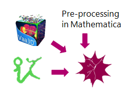

This website describes the working and use of SilberReconstructor, a hub for the automated reconstruction of neuronal morphology.
SilberReconstructor is a program implemented within Mathematica Version 10.3 2 for the automated reconstruction of neuronal morphology in three dimensional z stack confocal microscope images created by Aditya Nair while at the Cortico-Striatal Microcircuit Laboratory of Karolinska Institute under Prof. Gilad Silberberg.
Made for the biologist, it features an easy to use user interface and can give robust results without extensive domain knowledge in image processing.
As SilberReconstructor uses Wolfram Mathematica to perform its computations, this software must first be installed for SilberReconstructor to be functional.
 SilberReconstructor takes in three dimensional fluorescence microscopy images of neurobiotin filled neurons and applies pre-processing algorithms to remove the common sources of noise such as non-specific staining and neurobiotin leakage. It performs reconstruction using the APP1 or APP2 algorithms (Peng et al., 2011, Xiao et al., 2013) called from the Vaa3D platform (Peng et al., 2014). Post processing can be performed natively within SilberReconstructor or can be performed by calling the open source program NeuTube (Feng et al., 2015).
It performs preprocessing in the form of an intensity based filtering that allows for the removal of non-specific background staining and a size-based filtering that aids to remove neurobiotin-blobs typically present in images of neuro-biotin filled neurons.
SilberReconstructor acts as a pipeline that allows for the complete automated reconstruction of neuronal morphology. It presents a simple to use interface that allows users to proceed with analysis without any domain-specific knowledge in image processing.
Know more about how to use SilberReconstructor using the SilberReconstructor User Manual found at this link: SilberReconstructor User Manual.